关于ret2_dl_runtime_resolve的学习总结
这篇文章也算是集百家之长了，因为在学习ret2dlresolve这个高级rop的时候，师傅们可能都是因为实力比较强，因而在一些细节的地方没有解释为什么，如此在学习的时候，还是稍微有点吃力的，学习了很多位师傅的博客之后加上自己的一些思考才写出了这篇博客（我认为写的比较好的博客链接都放到文章最后了，我有的小细节可能忘记提到了，可以去这些师傅的博客上面看一下），也算是站在巨人的肩膀上学习了。
在学习ret2dlresolve的时候，我建议先把_dl_runtime_resolve函数的运作流程搞透彻了再去做题，效果会好很多，不然直接上题的话，根本就不懂原理是怎么搞的。
需要的前置知识：1、对延迟绑定机制的整体流程较为熟悉 2、对栈迁移的知识要比较熟悉 3、做题的时候，可能会遇见很多小细节问题，因此要具备gdb调试能力 4、如果可以的话，最好参考着glibc源码一起学习这部分内容（就是遇见不会的问题，可以从源码上下手试试），尽管我已经出示了用到的结构的源码，但我建议最好你的手里也有一份glibc源码 5、由于刚开始理解会异常的费劲，可能会需要几天才能理解透彻，所以学习这部分的内容还需要有一份耐心
延迟绑定整体流程图
下面我主要解释_dl_runtime_resolve这个函数运作时的情况，而延迟绑定的整体流程我就不详细说明了，具体的流程可以参考下面这个流程图（这个我也忘记是哪个师傅做的了，很久之前收藏了这个图片）
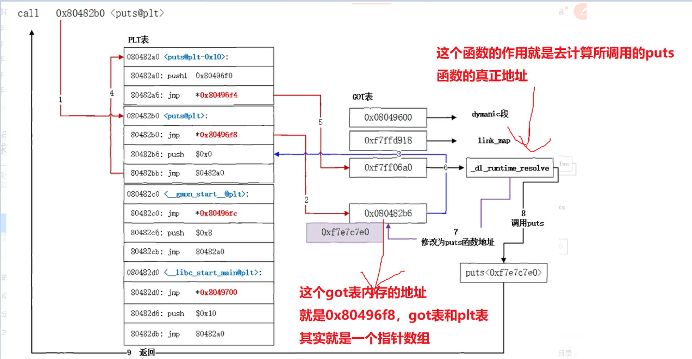
而Linux中最终完成动态链接的函数进行重定位的是在_dl_runtime_resolve(link_map_obj, reloc_index)函数中完成的，如果再详细一点就是_dl_runtime_reslove函数调用了_dl_fixup函数，然后_dl_fixup函数调用了_dl_lookup_symbol_x函数，最终这个函数去动态库里面找到了我们此刻进行延迟绑定的函数，并且把它的地址填写到了got.plt表项中。这里主要详细讲一下_dl_runtime_resolve函数的运作流程
_dl_runtime_reslove函数的运作流程
这个函数运行的大致流程如下，流程不理解也没关系，先结合着我写的流程跟着一起做就可以了，做完之后肯定就会有点思路了，这时候就可以进行一些思考了。下面这三个段，我建议先大概看一下，不用彻底弄懂，然后开始跟着我的流程分析，等遇到这个段的时候，再拐回来看，效果会比较好。
.dynamic段
.dynamic段里面保存了动态链接器所需要的基本信息，比如依赖于哪些共享对象，动态链接符号表的位置（Dynamic Symbol Table)、动态链接重定位表的位置、动态链接字符串表的位置(Dynamic String Table)。也就是说**比如现在想找到Dynamic Symbol Table，就必须先找到.dynamic的地址，才可以去找到Dynamic Symbol Table，因此这个段主要用于寻找与动态链接相关的其他段( .dynsym .dynstr .rela.plt 等段)。**下面是Elf32_Dyn的结构，它由一个类型值即d_tag和一个数值或指针（union是一个联合体，同时定义了一个数值d_val和一个指针d_ptr，但是一次只能存储一个值，因此这个联合体的大小为4字节，而整个结构体Elf32_Dyn为8字节，这个结构以及结构的大小会在一会查看Dynamic Symbols Table和Dynamic String Table的时候派上用场）。
typedef struct |
动态符号表（Dynamic Symbol Table)
动态符号表中存储了与动态链接相关的符号，而这个段的段名通常叫做“.dynsym"，而对于本模块的内部符号或者私有变量则保存在.symtab这个表，symtab保存了所有的符号，包括.dynsym中的符号。
使用readelf -s 文件名 则可以查看文件中的.dynsym和symtab（如下面两张图片）
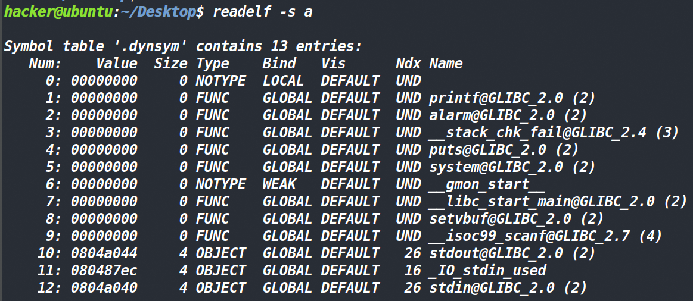
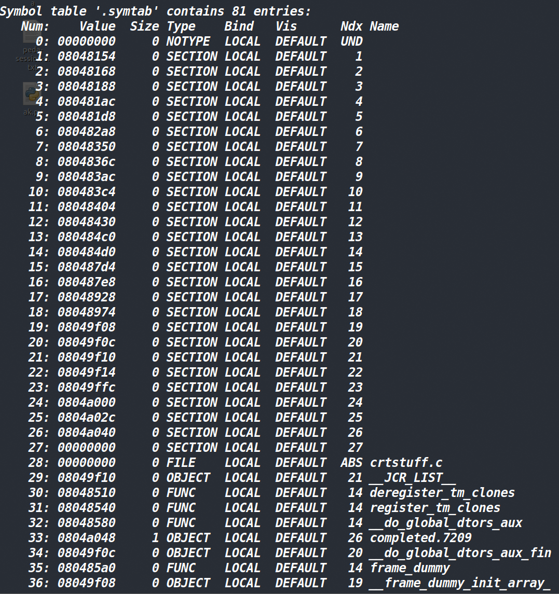
动态符号字符串表（Dynamic String Table)
跟名字一样，这个表就是保存了符号名的字符串表。而这个表存在的意义是由于Dynamic Symbol Table里记录的都是固定长度的内容，因此它们没办法去描述二进制文件中的任意字符串（也就是我们的函数名称），因此就需要再创立一个表（也就是.dynstr)来存储函数名称的字符串，在.dynsym中的.st_name字段存储了一个偏移，而最后.dynstr段的首地址加上这个偏移量才能找到符号的名称。而_dl_lookup函数最后就是拿着这个符号的名称（也就是函数的名称）去动态链接库里面搜索对应的函数。
在IDA中可以找到这个ELF String Table
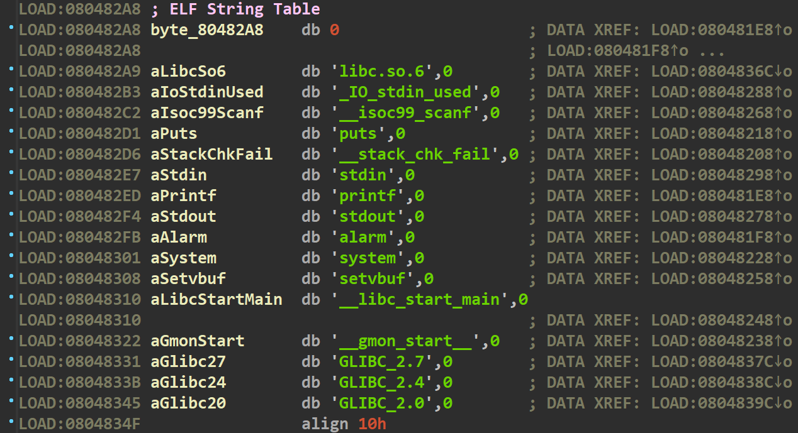
_dl_runtime_resolve函数具体运行模式
-
首先用
link_map（就是_dl_runtime_resolvehand的第一个参数）访问.dynamic，分别取出.dynstr、.dynsym、.rel.plt的地址 -
.rel.plt+参数relic_index，求出当前函数的重定位表项Elf32_Rel的指针，记作rel -
rel->r_info>>8作为.dynsym的下标，求出当前函数的符号表项Elf32_Sym的指针，记作sym -
.dynstr+sym->st_name得出符号名 字符串指针 -
在动态链接库查找这个函数的地址，并且把地址赋值给
*rel->r_offset，即GOT表 -
最后调用这个函数
这里我以scanf函数的调用来演示一下（随便找个程序就可以一起做了）
此时即将调用scanf，我们进入内部看一下
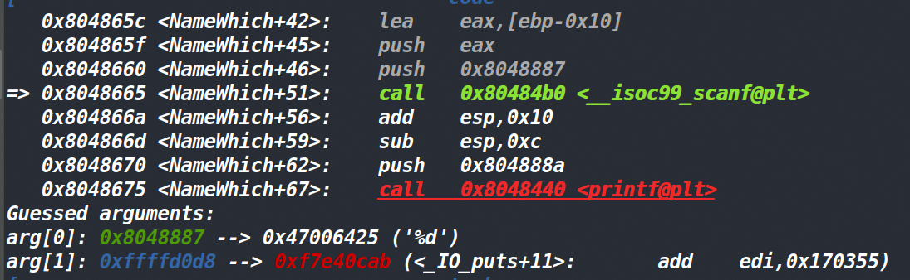
发现刚进去，就要让跳到0x0804a028所指向的地址（注意这里并不是跳到0x0804a028，而是跳到0x0804a028所指向的地址），我们先看一下0x0804a028指向的哪
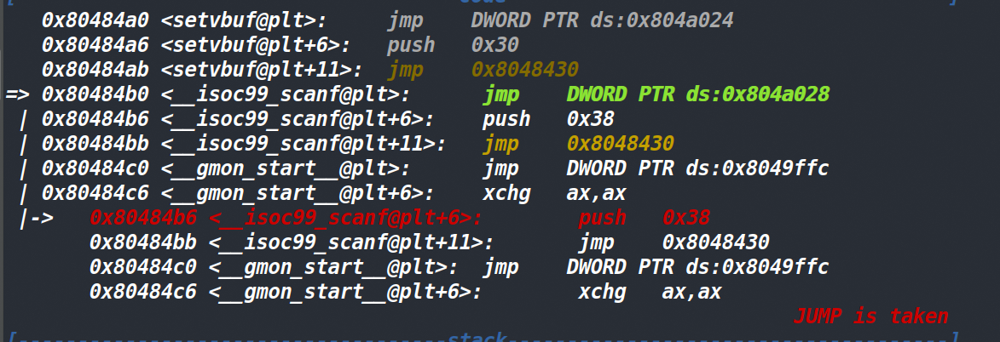
发现指向的就是下一条指令的地址，这也就顺应了延迟绑定的流程图中的步骤②
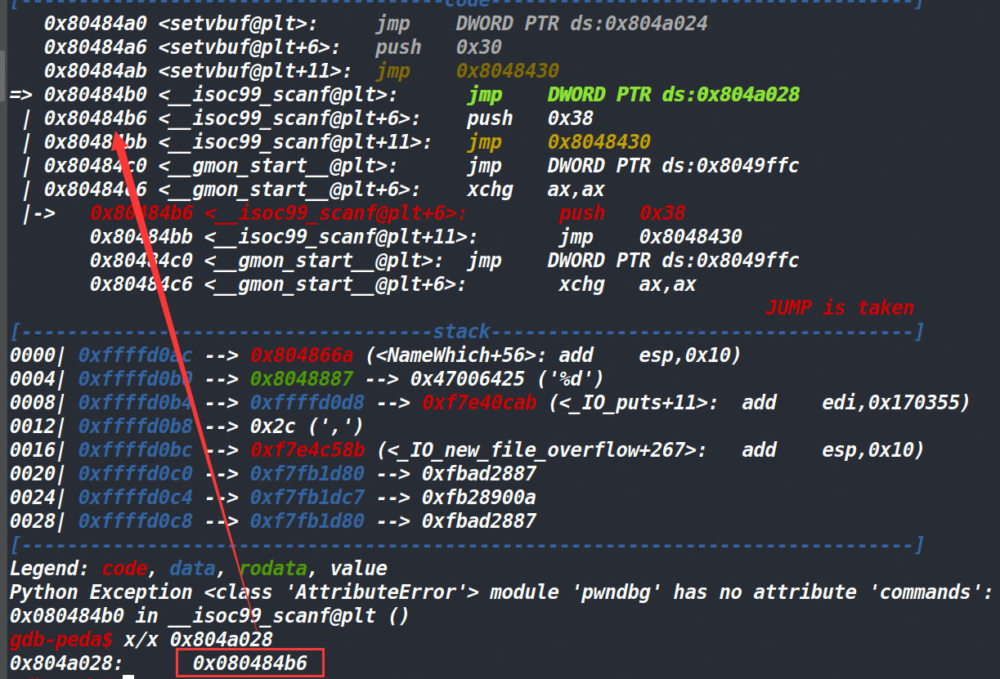
也可以发现此时的got表中scanf的地址写的就是0x080484b6，而这并不是scanf函数的真实地址。
然后发现push了一个0x38，此时我们还不知道这是什么，先不管它。
发现此时准备跳转到地址0x8048430，然后跳到0x08048430，其实此时你会注意到这个地址距离当前指令的地址是很近的（再看下延迟绑定的流程图会发现其实现在就是步骤④），然后接下来是一个push，一个jmp，我们分别看下push和jmp的内容
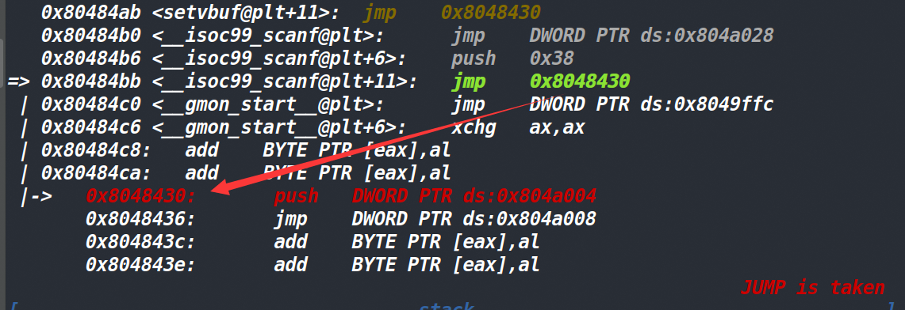
可以发现push的是一个地址，而jmp则是跳到了_dl_runtime_resolve（此时完成的是延迟绑定流程图的步骤⑥）
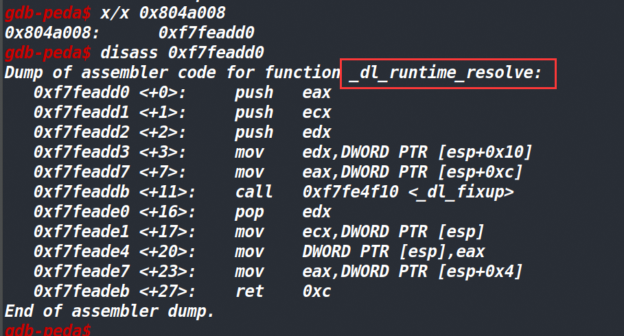
此时才发现，准备跳到_dl_runtime_resolve的时候，之前压栈的两个原来是参数，因此栈顶的这个地址0xf7ffd940就是参数link_map，而0x38则是参数reloc_index。
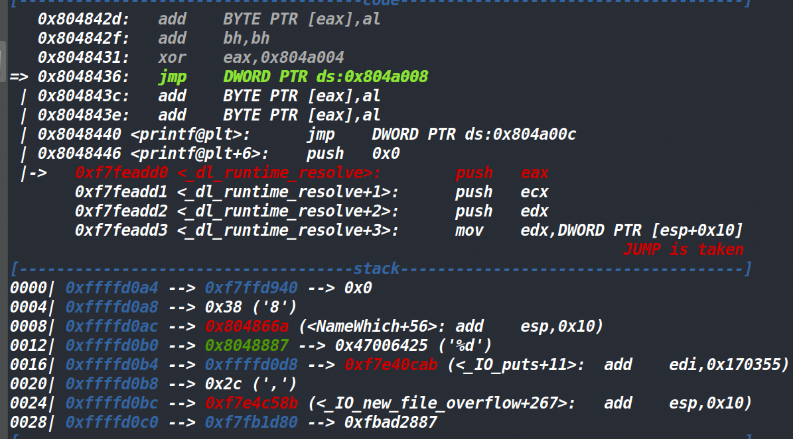
因此我们先通过link_map去找到.dynamic的地址，这里第三个地址就是.dynamic的地址，不过为什么是第三个地址，而不能是别的地址？（参考下面的解释，怎么用怎么用link_map访问到.dynamic的地址的？）
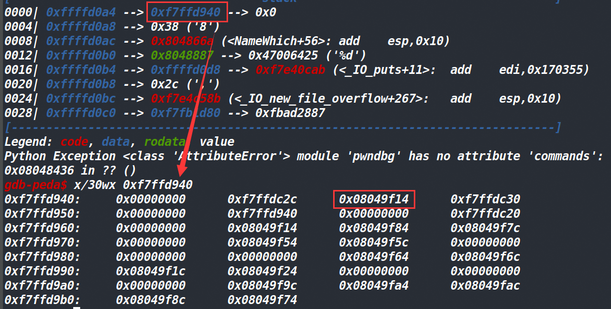
怎么用link_map访问到.dynamic的地址的？
link_map的源码如下
struct link_map |
可以发现在第三个成员 *l_ld这里存储的是Dynamic段地址，因此我们去查找link_map结构体中第三个的地址就是.dynamic的地址了
现在要分别取出.dynstr、.dynsym、.rel.plt的地址了，它们处于什么位置？
我们先用readelf -d 看一下.dynamic段的内容
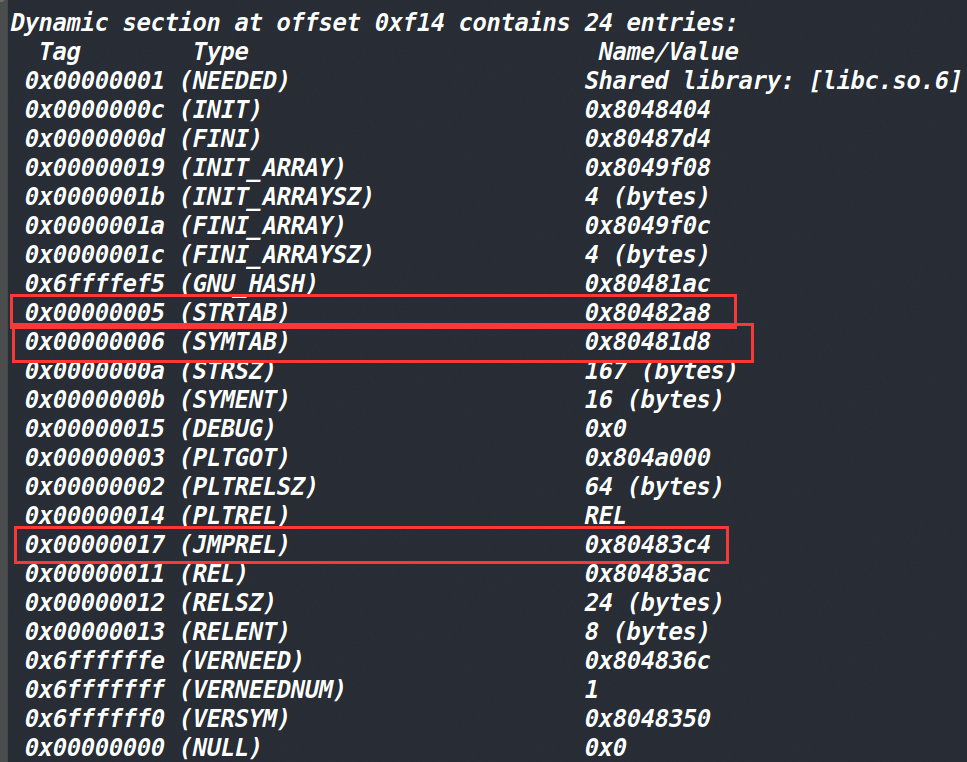
发现了.dynstr、.dynsym和rel.plt的位置，分别是位于了偏移9，偏移10，和偏移17的位置，又结合最前面提到的结构体Elf32_Dyn为8字节，并且实际的值或者指针应该处于后四字节，因此他们应该分别在dynamic段中位于8*9-4=0x44，10*8-4=0x4c,17*8-4=0x84偏移处（这里要减去4字节是因为我计算的是不包括他们身处当前位置的字节，而前面计算偏移9、10、17的时候，包括了他们身处当前位置的偏移）因此这里去看下.dynamic段的内容，然后取出对应偏移的内容就是我们要找的.dynstr、dynsym、rel.plt。
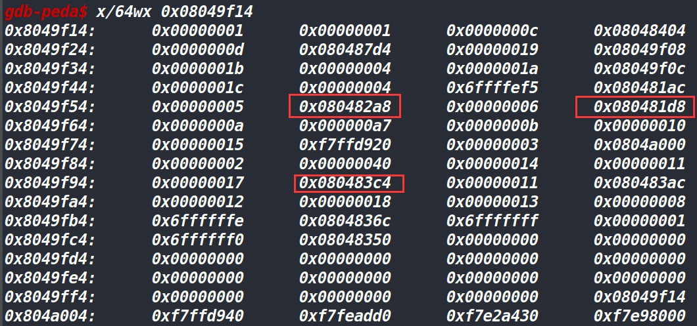
然后用rel.plt的值加上参数reloc_index，就是重定位表项Elf32_Rel的指针，即0x080483c4+0x38=0x80483fc。
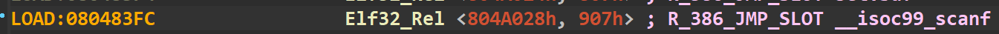
下面是Elf32_Rel的结构，对应上图来看，因此r_offset=0x804A028**（而这个r_offset就是got.plt的地址，就是说最后解析之后真实的地址会填写进r_offset所指向的地方）**,r_info=0x907。
typedef struct |
而将r_info>>8作为dynsym的下标，即0x907>>8=9
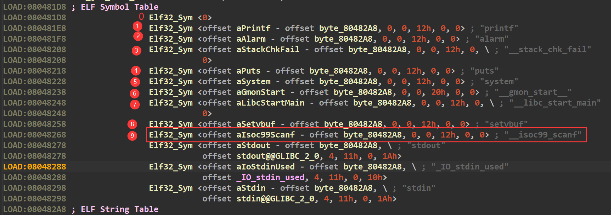
此时它的地址为0x08048268，我们看下Elf32_Sym的源码。
typedef struct |
发现在第一个成员st_name存储的就是字符串表的索引（这里我感觉理解成偏移更合适），也就是说符号表的一个内容存储的就是.dynstr距离所需要函数名称的偏移。
那我们看一下0x08048268地址的内容，发现了偏移是0x1a
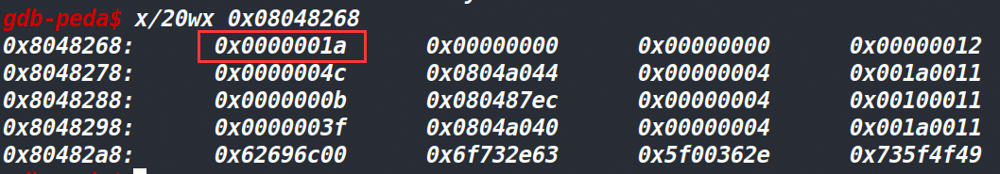
因此最终的st_name的地址为.dynstr的地址加上之前拿到的.dynstr的索引，即0x080482a8+0x1a=0x080482c2,
最终也是成功找到.dynstr中的scanf函数名字的存储地址。
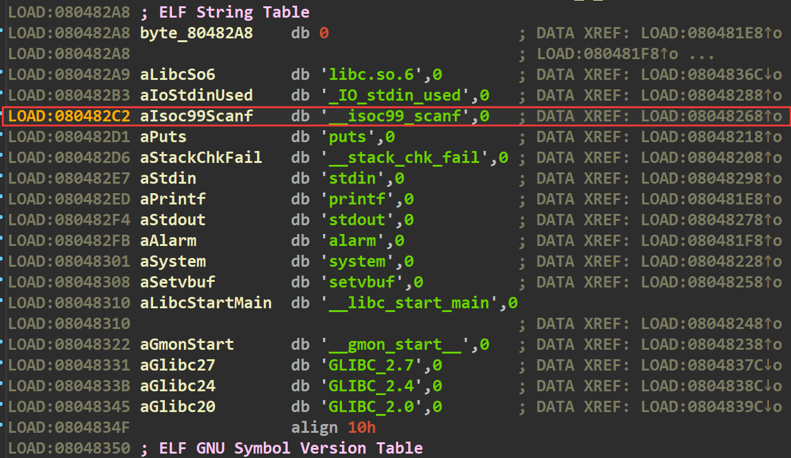
接下来就会调用_dl_lookup_symbol_x函数，去动态库里进行遍历搜索，可以看见下图的第一个参数就是我们要搜索的函数名称
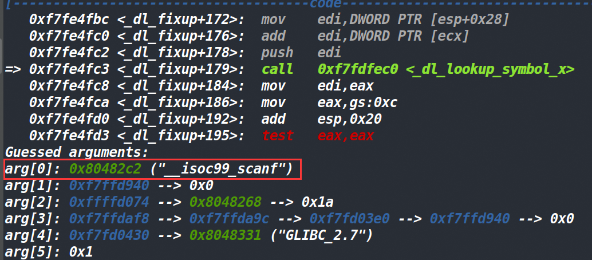
倒推整个过程，增强整体的逻辑性
然后上面说明的是具体的实现过程，但是彼此因果性可能不是特别强，下面我再倒推一遍，目的是为了让你知道每一步都在干什么。
我们需要拿到我们要找的函数名字（它是个字符串，而我们要拿到这个字符串的首地址），然后把它交给_dl_lookup_symbol_x,让这个函数去动态库里面搜索，找到我们想延迟绑定的函数，然后把地址再填写到got.plt里面
那现在唯一的问题就是我们怎么拿到这个函数的名字的字符串？
这个字符串放在.dynstr（动态符号字符串表）了里面，那我们现在需要两个东西，一个是.dynstr的首地址，一个是我们所需要的字符串距离.dynstr首地址的偏移，才能准确的去找到我们需要的函数名字
那现在的问题就是这两个东西怎么找？
①先说.dynstr的首地址
在.dynamic段里存储了动态链接器所需要的基本信息，而这其中就包含了.dynstr的位置，也就是说如果现在找到了.dynamic的地址，查看里面的内容即可找到.dynstr的位置
那现在的问题就是去找.dynamic的地址。
而观察了link_map的结构，发现link_map结构体中第三个内容存放的就是.dynamic的地址
因此我们只需要去查看一下link_map的内容，然后第三个内容就是我们要找的东西了，而link_map我们是知道的，因为它就是执行_dl_runtime_resolve函数时的第一个参数link_map_obj。
如此再推回去，就可以知道.dynstr的地址了
②再说一下相对于.dynstr首地址的偏移怎么找
通过阅读Elf32_Sym的源码，发现它这个结构体中第一个成员存储的就是我们要找的偏移
而这个结构又存储在.dynsym（动态符号表）中（每个函数都有一个自己单独的Elf32_Sym结构）
因此我们可以在.dynsym中找到我们想要的Elf32_Sym结构，可是又出现了两个问题。
每个函数都有一个这个结构，那我们怎么去.dynsym中找到我们要找的这个函数的结构？并且.dynsym的地址怎么找？
先解决第二个问题
.dynsym的地址也在上面提到的.dynamic段中存储了，而上面我们已经说了怎么找.dynamic段的地址，因此这个.dynsym的地址已经被我们知道了
然后解决第一个问题，我们怎么在.dynsym中找到我们要找的那个函数的结构？
找到这个结构其实也只是需要拿到它距离.dynsym首地址的偏移即可，而这个偏移需要去找到rel.plt表，这个表是由Elf32_Rel结构体组成，而将它的第二个成员存储的内容算术右移八位，得到的数值就是我们要找的结构距离.dynsym的偏移
现在的问题又是要去找rel.plt表，不过好在rel.plt也位于.dynamic段，由于每个Elf32_Rel的结构体又都对应一个函数，因此怎么去找到我们需要的那个Elf32_Rel呢？
又要用到偏移，而这个偏移我们不需要找了，因为这个偏移就是_dl_runtime_resolve的第二个参数reloc_index，如此推回去，也就知道了我们需要的.dynstr首地址的偏移了。
_dl_runtime_resolve函数运作的流程图
把上面的倒推过程画成图就是这个样子。
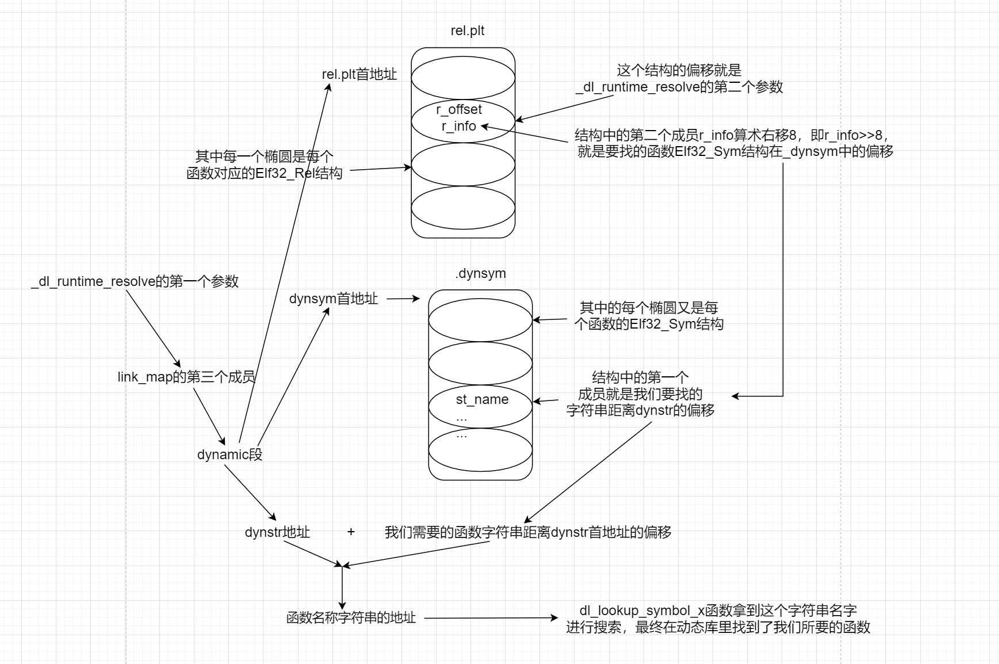
漏洞所在
通过阅读上面的所有内容，其实是可以发现，最后**_dl_lookup_symbol_x函数会去搜索字符串是有问题的，因为这个函数并不在乎你给的字符串是否是你此刻在延迟绑定的函数**，即使这个字符串是别的函数的名称，它依旧会去搜索，并且动态装载器并不会去检查重定位表的边界，即使你的_dl_runtime_resolve函数第二个参数是极大的，此时的偏移已经超过了rel,plt段的范围，装载器也依旧是认为这只是一个很大的rel.plt偏移，它不认为这个偏移超过了rel.plt段，最重要的就是32位程序里面，是用的栈传参，因此这就意味着_dl_runtime_resolve的第二个参数是可以被伪造的，综上所述，我们就可以伪造一个很大的 reloc_index,让原本偏移到rel.plt段的reloc_index偏移到我们伪造的可控内存，然后我们就可以伪造一系列的结构，最终让距离dynstr段首的偏移指向我们指定的字符串（也就是伪造了字符串），至此_dl_lookup_symbol函数就去搜索到了我们指定的函数。
实战ret2dlresolve
手动构造exp探究原理
我感觉ret2dlresolve的情况只适用于没有打印函数的程序，毕竟有了打印函数就可以直接用ret2libc了，因此这里我以只有一个read函数的题目来演示一下
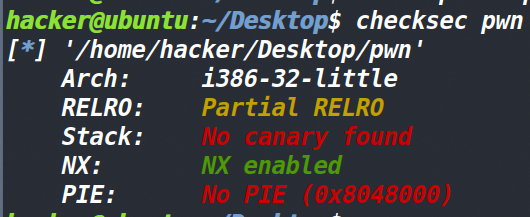
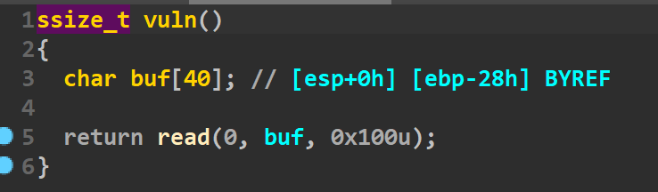
发现只有一个read函数，然后存在溢出，然后就啥都没有了，没有system函数，没有参数。像这种情况就考虑ret2dlresolve的方法了。
接下来我直接就上exp了，详细解释都在exp里面。（里面有的要用到图片解释的地方，我有进行标注，请参考最下面的补充内容）
题目我上传到网盘上了 链接https://pan.baidu.com/s/178HKNE9slZspt7EIB81zoA?pwd=ykpa 提取码ykpa
#coding:utf-8 |
补充①
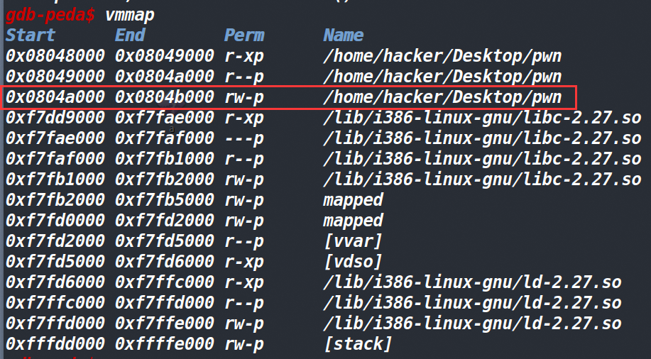
补充②
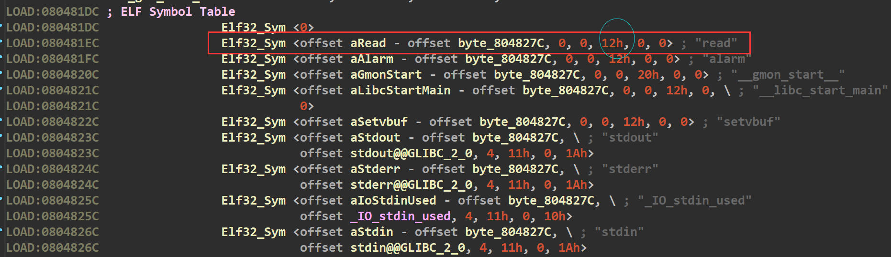
补充③
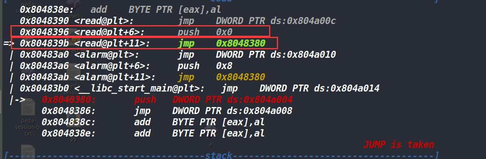
payload2=p32(plt0)
payload2+=p32(reloc_index)
这两步对应的就是图中标注的两步，这也就是plt在干的事情（因此你可以把这两步等同于p32(read_plt_addr)）
工具攻击
另外也可以采用Roputil工具，进行攻击，这个工具的威力是很大的，我们根本不需要改什么东西，只要换个偏移和程序名，然后就一把梭了。工具在此下载https://github.com/inaz2/roputils
#!/usr/bin/env python |
BUUCTF上的xdctf2015_pwn200
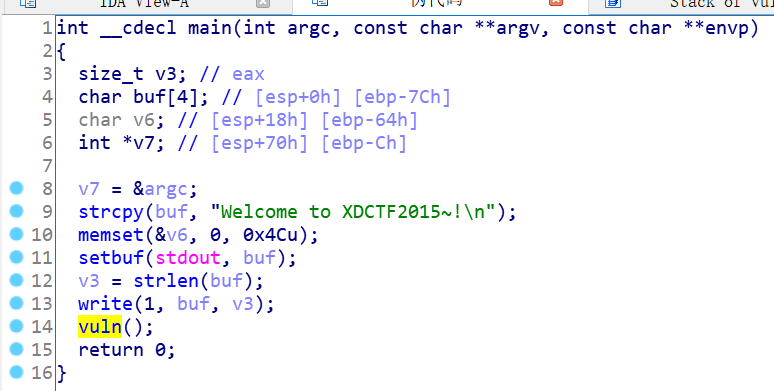
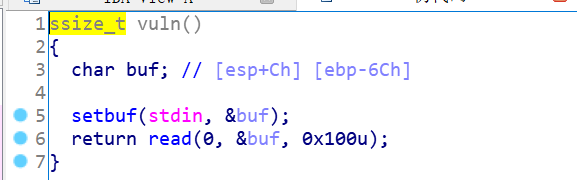
在以这道题为例看一下Roputil的威力（不过这道题实在有点杀鸡用牛刀了，因为存在泄露函数，直接用ret2libc也可以）
我只是拿上面的exp改了一下偏移和远程题目的地址（需要注意的是由于刚开始直接从Roputils里面引入了所有的函数，因此我们要用原本pwntools中的函数时，需要再引用一下）这里还把上面那个exp中的from pwn import process换成了from pwn import remote，最后直接一把梭。
#!/usr/bin/env python |
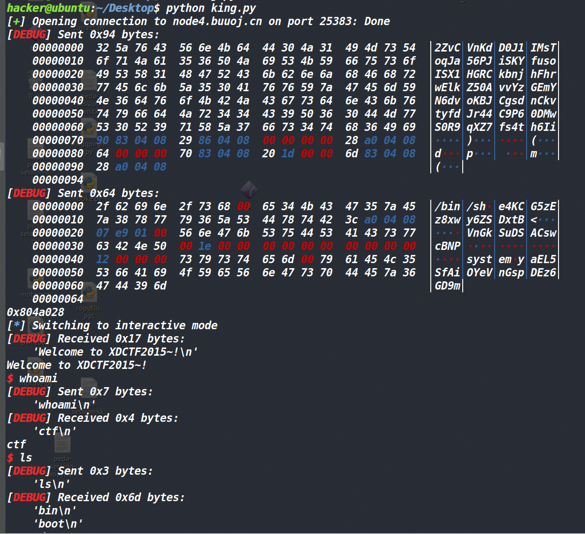
然后下面我再给出手动构造的exp，其实我还是直接复制了上面的exp，只不过改了几个参数而已，这其实就是个模板而已，我把需要改的参数用三个*标注一下,剩下的直接照搬，一把梭。
#coding:utf-8 |
ret2dl回顾极速版
md，之前写过的文章重新回来再看，感觉太啰嗦了，重新温习了一下，这里写一个关于延迟绑定的过程极速版。
dynamic段 保存了动态链接器所需要基本信息，下面三个都位于dynamic段
dynstr(dynamic string table) 动态符号字符串表
dynsym(dynamic symbol) 动态符号表
rel.plt
延迟绑定的过程核心是_dl_lookup_symbol_x函数拿着搜索的函数名去libc中匹配对应函数，大致过程是用dynstr地址+函数名在dynstr里的偏移来查找到的函数名字符串。
dynstr里的偏移需要通过rel.plt加上dl_runtime_resolve函数的第二个参数先得到dynsym里的偏移，再通过dynsym里的偏移加上dynsym的地址得到。拿着这个偏移加上dynstr的地址即可。
用ida简单演示一下过程
先去rel.plt里找到对应的结构，这个偏移是dl_runtime_resolve函数的第二个参数

然后用上面的那个0x207右移8得到2，这个就是该函数在dynsym里的偏移如下

然后看一下这个地址0x080472a0的值，如下

最后拿着这个0x3d加上dynstr的首地址即可找到函数名字，如下


其他博客链接
最后由于参考了很多师傅的博客，这里面我把一些我感觉写的不错的博客放一下，如果对于我上面写的有不懂的也可以看看下面这些博客
下面这两个博客都把exp分开构造的过程详细写了。
深入理解-dl_runtime_resolve-博客 (soolco.com)
高级ROP ret2dl_runtime 之通杀详解 - 先知社区 (aliyun.com)
然后我探究上述_dl_runtime_solve执行流程主要是跟着下面这个师傅的博客做的
_dl_runtime_resolve - 简书 (jianshu.com)
下面这个是介绍_dl_runtime_solve的前置知识很详细
下面这个博客是对一些源码做了注释
(25条消息) glibc动态链接器dl_runtime_resolve简要分析_Hello World.c-CSDN博客
下面两个主要是解释了下用到的一些段的解释
https://www.jianshu.com/p/8dd91ec35dda
https://www.thinbug.com/q/53156275
然后这个师傅的exp写的比较清晰，解决了我的一些问题
https://eqqie.cn/index.php/archives/1023
然后下面这个师傅写的应该是最详细的了，对一些小细节有疑问的可以在这上面找找